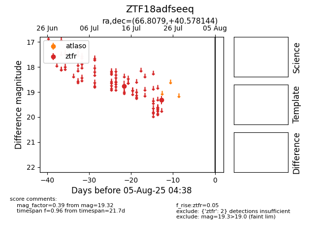

Target ZTF18adfseeq at 2025-08-05 04:38, see:
FINK: fink-portal.org/ZTF18adfseeq
Lasair: lasair-ztf.lsst.ac.uk/objects/ZTF18adfseeq
ALeRCE: alerce.online/object/ZTF18adfseeq
alt names
ZTF18adfseeq (ztf,fink)
coordinates:
equatorial (ra, dec) = (66.8079,+40.57814)
galactic (l, b) = (161.0461,-5.80846)
photometry
last ztfr=19.32
2 ztfr detections
